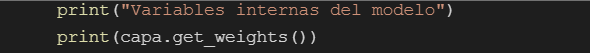

Redes Neuronales
Análisis del funcionamiento de una red neuronal
(Utilizando el framework Scikit Learn)
Las redes neuronales artificiales son un tipo especial de algoritmos de Machine Learning que intentan simular el funcionamiento del cerebro humano. Es decir, al igual que las neuronas de nuestro sistema nervioso son capaces de aprender de los datos pasados, las redes neuronales artificiales son capaces de aprender de los datos y proporcionar respuestas en forma de predicciones o clasificaciones.
Las redes neuronales tienen un gran campo de aplicaciones, como el reconocimiento de imágenes, el reconocimiento del habla, la traducción automática y el diagnóstico médico.
Con estas redes se pueden mejorar las técnicas de análisis de datos existentes gracias a su avanzada capacidad de predicción.
Componentes de las Redes Neuronales
Las redes están conformadas por 3 elementos principales: neuronas, pesos y bias.
Funcionamiento
Las redes neuronales artificiales comienzan asignando valores aleatorios a los pesos de las conexiones entre neuronas. La clave para que la red neuronal realice su tarea de forma correcta y precisa es ajustar estos pesos a los números adecuados. Pero encontrar los pesos adecuados no es muy fácil, sobre todo cuando se trata de múltiples capas y miles de neuronas.
Esta calibración se realiza entrenando la red con ejemplos anotados. Por ejemplo, si se quiere entrenar un clasificador de imágenes, se le proporcionan múltiples fotos, cada una etiquetada con su clase correspondiente (persona, auto o animal). A medida que le proporcionas más y más ejemplos de entrenamiento, la red neuronal ajusta gradualmente sus pesos para asignar cada entrada a las salidas correctas.
De igual manera cada que la red reajusta todos sus pesos se conoce como época y es una iteración en la cual se debe de repetirse cientos o miles de veces hasta que sea necesario y cada neurona cuente con los pesos adecuados.
Scikit Learn
Es probablemente la librería más útil para Machine Learning en Python, es de código abierto y es reutilizable en varios contextos, fomentando el uso académico y comercial. Proporciona una gama de algoritmos de aprendizaje supervisados y no supervisados en Python.
Incluye:
- NumPy: librería de matriz n-dimensional base
- Pandas: estructura de datos y análisis
- SciPy: librería fundamental para la informática científica
- Ipython: consola interactiva mejorada
- SymPy: matemática simbólica
RED NEURONAL (METROS A PULGADAS)
Paso 1.
Se importan las librerías que se van a usar
- NumPy: arreglos numéricos
- Tensorflow: librería para inteligencia artificial hecha por google
Paso 2.
Se declara un arreglo de números donde se ponen las 7 entradas de metros, luego se crea otro arreglo con los resultados en pulgadas (ejemplos que la red usará para aprender)
Se utiliza el framework keras que permite hacer redes neuronales de manera simple (ahorra líneas de código)
se pueden especificar las capas de entrada y de salida de la red neuronal o solo especificar la de salida.
Paso 3.
Se crea una variable llamada capa y se inicia como una capa de tipo densa tf.keras.layers.Dense y se le indica las unidades o neuronas de la capa. Aparte se usa la variable input_shape donde se especifica que tenemos una entrada con una neurona también
Las capas densas son las que tienen conexiones desde cada neurona hacia todas la neuronas de la siguiente capa.
Paso 4.
Se inserta el modelo secuencial de keras tf.keras.Sequential y se le indica la capa que se creó anteriormente.
Paso 5.
Luego se compila el modelo (modelo.compile), es decir que prepara el modelo para ser entrenado y se le asigna dos propiedades para que procese las matemáticas del modelo para que aprenda mejor
- Optimizador (optimizer): Se usa el optimizador llamado Adam que le permite a la red saber cómo ajustar los pesos y sesgos de manera eficiente y se le indica un valor numérico que es la tasa de aprendizaje (tf.keras.optimizers.Adam(0.1)), que le dice que tanto ajustar los pesos y los sesgos.
- Funcion de perdida (loss): Se usa 'mean_squared_error' (error cuadrático medio) y considera que una poca cantidad de errores grandes es peor que una gran cantidad de errores pequeños.
Paso 6.
Se entrena el modelo usando la función .fit y se le indica los datos de entrada y resultados esperados (metros y pulgadas ) y se le indica la cantidad de veces se quiere que lo intente o entrene. Además se pone verbose=false para que no imprima mucho sobre el entrenamiento y se imprime si ya se entreno o no.
Paso 7.
Antes de ver la predicción, se ven los resultados de la función de pérdida, que dice que tan mal están los resultados de la red en cada vuelta que dio.
Paso 8.
Se imprime una predicción.
Paso 9.
Para ver la estructura interna de la red, es decir que datos se asignaron después del entrenamiento al peso y el sesgo. se usa la función capa.get_weights para que se imprima los valores
- El peso es el primer array
- El sesgo es el segundo array

En este caso se ha creado una red neuronal con un solo eslabón que intenta descifrar el comportamiento de una función lineal , de tal manera que el peso del modelo representa la pendiente de la función aproximada y el sesgo su punto de corte.